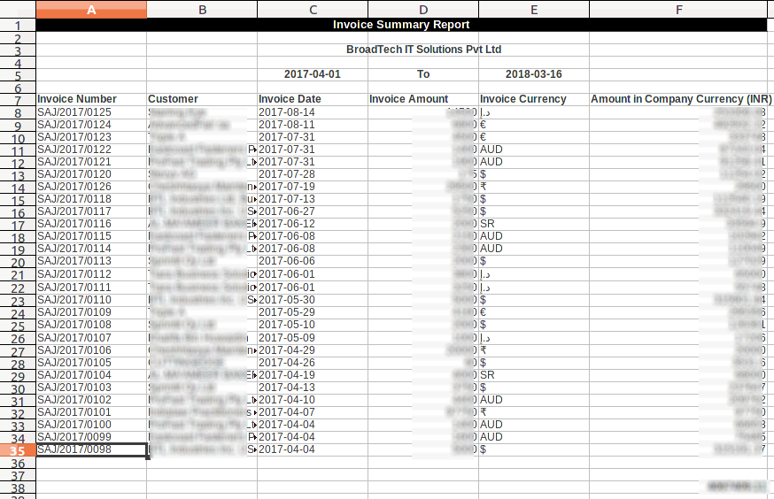

<section class="oe_container oe_dark">
    <div class="oe_row oe_spaced">
        <div class="oe_span12 oe_spaced">
            <h2 class="oe_slogan">Invoice Summary Report</h2>
        </div>
        
	<div class="oe_span8 oe_centered">
        <div class="oe_row_img oe_centered">
                
        </div>
    </div>
	
	<div class="oe_span4">
	 <p class="oe_mt32">
This module introduces a new xls and PFD report - Invoice Summary Report, inline with the standard Odoo invoicing and accounting apps.
	 </p>
	 <p >
	 The report is a summary of the Invoices Generated during selected period and for specific customer, which makes invoice analysis easier. </p>
     </div>
	    
    </div>
</section>


